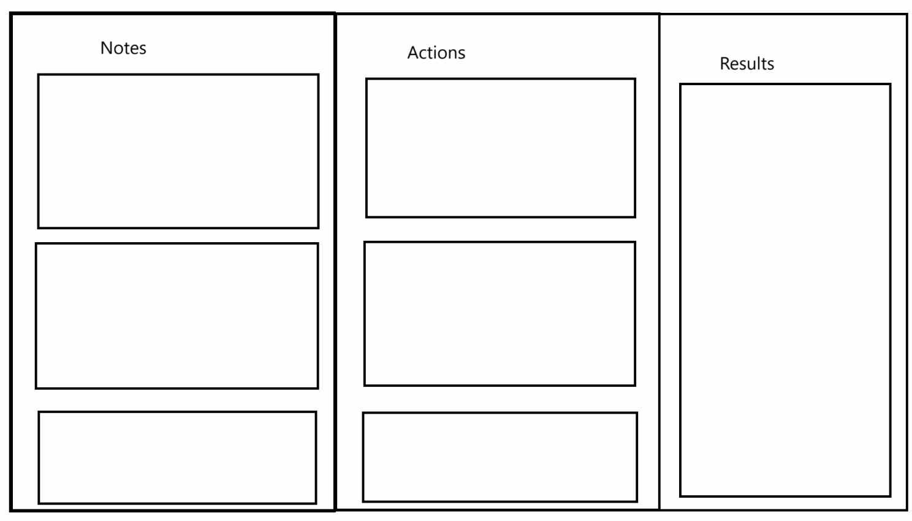
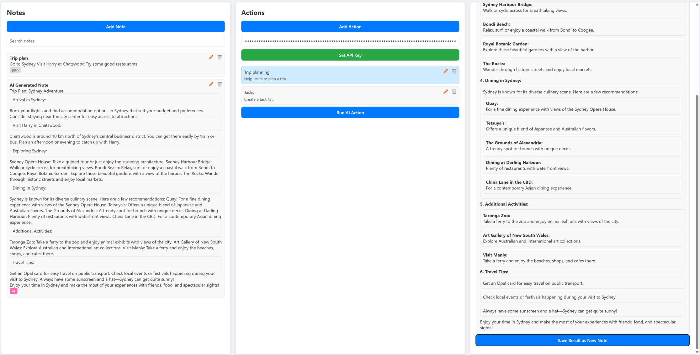
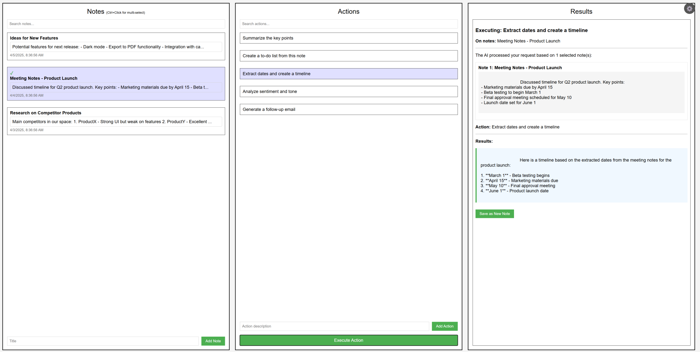

Creating a Noting System with AI in 1 Hour – No Coding
In a recent experiment, I set out to build a fully functional note-taking system using ChatGPT AI tools — all within one hour and without traditional coding! I recorded the process during a video call where my friend simultaneously worked with Claude AI to build a similar tool. Although his initial results were more refined, our collaboration and subsequent iterations led to a robust solution that perfectly met our requirements.
The Experiment¶
The goal was simple: use AI's programming abilities to generate a modern note-taking system with features like:
- A three-column layout (Notes, Actions, Results)
- Modal editors for adding and editing notes and actions
- A live Markdown preview for notes
- A tagging system to differentiate regular notes from AI-generated ones
- Full integration with an AI agent to perform actions on selected notes
Throughout our conversation with the AI, we iterated quickly — adjusting requirements, tweaking the layout, and even improving the user experience. The AI-generated code provided a solid foundation, though it required a few adjustments as the complexity increased.
Below is the initial prompt provided to ChatGPT and Claude to start the project:
Please help me build a note taking system, here are the requirements:
### User Interface
- HTML & CSS: A static webpage with forms for adding documents and clauses,
along with sections for displaying search results.
- JavaScript: Handles core application logic including data operations,
search functionality, and data organization.
### The layout will be like in the picture:
- Notes part: allow users to input notes and view them
- Action part: serve as task direction of an AI agent
- Results part: AI agent performs action based on selected notes

A prototype image was included with the prompt to visually guide the AI model, ensuring it accurately understood the desired concept and layout.
The final results from ChatGPT (GPT-4o-mini-high) and Claude AI (Claude 3.7 Sonnet) clearly demonstrate the distinct approaches and outcomes produced by each AI model:

Result of ChatGPT o3-mini-high. Code: GitHub

Result of Claude 3.7 Sonnet. Code: GitHub
The recorded video: Watch on YouTube
The Process and Comparison¶
During our session, my friend using Claude AI demonstrated his approach first. His early rounds produced cleaner results, which was impressive given the constraints of a no-code environment. However, as we discussed additional features — like incorporating note titles, tags, and handling complex prompts — the conversation became more intricate.
I followed a similar path, engaging in back-and-forth refinements:
- Adding modal pop-up editors for notes and actions
- Implementing a tagging system that automatically marked AI-generated notes with a distinct color
- Modifying the AI prompt to include both note titles and content
While Claude AI delivered better code in the first few rounds, the iterative process with my tool led to the desired functionality, proving that AI can effectively generate "instinct tools" to boost work efficiency.
Lessons Learned¶
Our experiment reinforced the tremendous potential of AI in application development:
- Efficiency Boost: AI tools can rapidly generate prototypes, enabling non-coders to create meaningful tools that assist in everyday tasks.
- Rapid Iteration: With AI, the turnaround time for changes is dramatically reduced, allowing for agile experimentation.
- Complexity Challenges: As features become more advanced and the codebase grows longer, both AI and non-expert users might struggle with debugging. The generated code may contain bugs that require human expertise to resolve effectively.
Conclusion¶
The experience was both exciting and insightful. We succeeded in creating a functional note-taking system in under an hour, which confirmed that AI tools are not only useful but also powerful in generating tools that enhance productivity. However, as our project evolved, it became clear that for more complex systems, a blend of AI assistance and human expertise remains essential.
This experiment shows how programming is changing, with AI acting as a co-pilot — accelerating development while still relying on skilled hands to navigate the nuances of complex code.